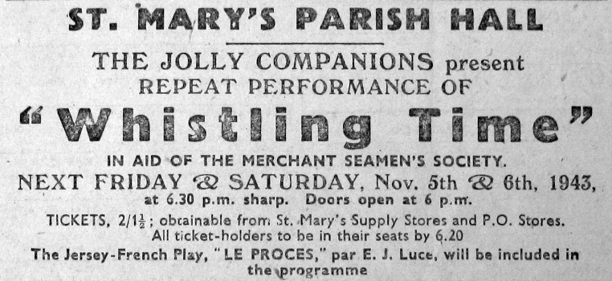
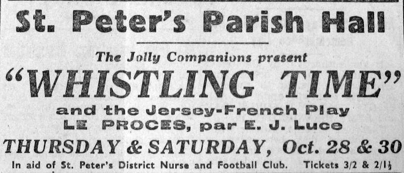

Edwin John Luce - "Elie"
(30/1/1881-21/10/1918)

Edwin John Luce - "Jock" à touos ses anmins - fut né au Passage, à St. Louothains, lé 30 dé Janvyi 1881, fis dé John Edouard Luce et d'Eliza Jane du Tôt. I 'tait un homme dé qualités extraordinnaithes. Il 'tait afflyigi et sa santé né fut janmais des pus robustes - ch'tait p't-êt' à cause dé ch'la qué la mort l'emportit en 1918 à l'âge dé trente-sept ans, d'eune pneumonie à la siette d'eune mauvaise suée d'fraid.
Comme rédacteu d'la "Nouvelle Chronique", et pus tard des "Chroniques de Jersey", i' vivait pûtôt parmi l's affaithes officielles, et l's êvènements du jour 'taient tréjous l's objets d's articlyes d'fond tch'il êcrivait dans sa gâzette en parfait Français mais en même temps i' vivait tout près d'la natuthe étout, et la sîmplyicité d'ses pensées et sa sŷmpathie pour la natuthe humaine et sa condite vis-à-vis san vaisîn étaient des pus r'mèrquablyes.
I' c'menchit sa carriéthe ès lettres comme maître d'eune pétite êcole à St. Louothains. Pus tard i' c'menchit dans l'journalisme, et dès l'année 1900 sa poésie Jèrriaise pathaît dans l's almonas d'la "Nouvelle Chronique" souos l'nom d'plieunme d'"Elie". Il avait eune facilité d'êcrithe prose ou poésie tch'est l'admithâtion dé tout êcrivain d'nouot' belle vielle langue, et les cheins tchi nouos disent qué la langue Jèrriaise n'a ni grammaithe ni maniéthe d'êp'ler n'ont qu'à liéthe ses êcrituthes pour vaie l'contraithe.
Comme rapporteux il 'tait fanmeux, et les séances des Êtats, dé la Cour Rouoyale, dé la P'tite Cour, des Assembliées d'Pâraisse et des sociêtés d'toutes sortes n'étaient janmais compliètes à mains qu'nou n'vîsse "Jock" à sa pliaiche comme rapporteux.
Au samedi l'arlévée, eune fais la gâzette publiée, nou trouvait "Jock" dans s'n office dans l'Vièr Marchi, à s'n aise et prêt à bagouler auve fèrmièrs et anmîns tchi hantaient les prémisses en s'passant l'temps. Maît' Williamme Bisson, drait comme un pitchet, mînce, et la barbe pointue, 'tait Gérant et s'trouvait tréjous à sa pliaiche driéthe lé compteux. I' s'accordaient comme des clioches, li et "Jock", et dans l'almonas d'la " Nouvelle Chronique" dé 1911 ou' pouvez liéthe les patholes dé "Jock" à s'n êgard :-
Tch'est qu'est Gérant d'la "Chronique",

Et né v'chîn iun des vèrsets dé chutte belle êloge à Mess Bisson qué j'pouvons prendre à tchoeu aujourd'aniet :-
Tch'est qui n'tcheint pon à l'AngliaisSus l'but du compteux, lé bieau vièr mâle cat à Mess Bisson, tch'avait nom "Prêtro" s'assiévait, ordgilleux comme un rouai, etronronnait pour lé pliaisi d'tout l'monde. Mess Bisson et "Jock" aimaient chu cat-là et "Jock" - dans l'almonas d'la "Nouvelle Chronique" dé 1910 - lî faisait hommage en poésie :-
Tch'est qui sus l'compteux s'assièd
"Jock" aimait l's animaux, et n'aimait pon à vaie les pouorres couochons tués au couté, et dans l'almonas dé 1910 il êcrivait la "Nécrologie Porcine". Et pis, étout, sa "Compliainte d'eune Vaque" dans l'almonas d'la "Nouvelle Chronique" dé 1914, où'est qu'la vaque nouos raconte sa naissance et sa vie d'vieau, d'gniche et d'vaque - la cruauté d'êprouver à l'embelli pour l'exposition - san mathiage à un gros boeu qu'ou' n'avait janmais veu d'vant et finalement s'n exil dans un aut' monde auprés qu'oulle avait 'té s'pathée d'ses pathents, êfants et anmîns!

Dans l'couothant d's années d'sa courte vie, nouot anmîn Jock, ouaithe tch'i' n'avait janmais eune minute dé r'pos - tréjous prêssi et loyal à sa tâche dé rédacteu d'sa gâzette - en êcrivait d'toutes les sortes en Jèrriais et en Français, et entouor' touos sujets. Il 'tait auteur dé farces, conmédies et pliaiches dé théâtre, et n'y-a qu'à liéthe les almonas d'san temps pour les trouver. Ieune dé ses bouannes conmédies, "Lé Procès", fut jouée bein des fais dans les campangnes pour faithe des sou pour les souffrants d'la dgèrre dé 1914.
Lé chant întérêssait l'anmîn "Jock" étout. Il aimait hardi la musique. Pouor des concerts en Jèrriais i' traduisait des chansons dans sa langue maternelle et favorite, et il en composait des p'tits buts pouor chanter ès airs bein connus.
Edwin John Luce mathyit Mlle. Lilian Ozanne, dé Dgèrnési. Après la mort d'san bouanhomme, Madame Luce démeuthait en Êcosse, siez ieune dé lus deux filles. Lé fréthe à "Jock", Philip W. Luce, dé Vancouver au Canada, 'tait bouan êcrivain d'la langue Jèrriaise étout. Ses poésies, composées dans san janne temps souos l'nom d'plieunme dé "Ph'lippe d'la Gôlarde", lus trouvent dans les vièrs almonas d'la "Nouvelle Chronique".
Quand la mort fauchit l'célèbre "Jock" dans la prînme dé sa vie, Moussieu l'Bailli Vèrnon fit l's êloges dé sa bouanne vie et dé s'n oeuvre comme journaliste et poète, en plieine séance dé Cour, et l'almonas des "Chroniques de Jersey" dé 1919, dans eune articlye touchant san décès, fit allusion à ses qualités en disant :-
"Ce n'est pas trop de dire que d'un bout de l'Ile à l'autre il était connu, aimé et respecté. 'Jock' n'avait pas d'ennemis et bien certainement il ne méritait pas d'en avoir, car il était toujours prêt à rendre service et à s'employer pour le bien d'autrui. Intelligent et habile, il avait la plume facile pour écrire la prose française, anglaise, ainsi que notre patois et aussi la poésie également."

 
|
L's êcrits d'Élie:
D'aut' textes par Elie r'publiés dans des livres et magâsîns:
Bram & Elie
Les Nouvelles Chroniques du Don Balleine
The Toad and the Donkey